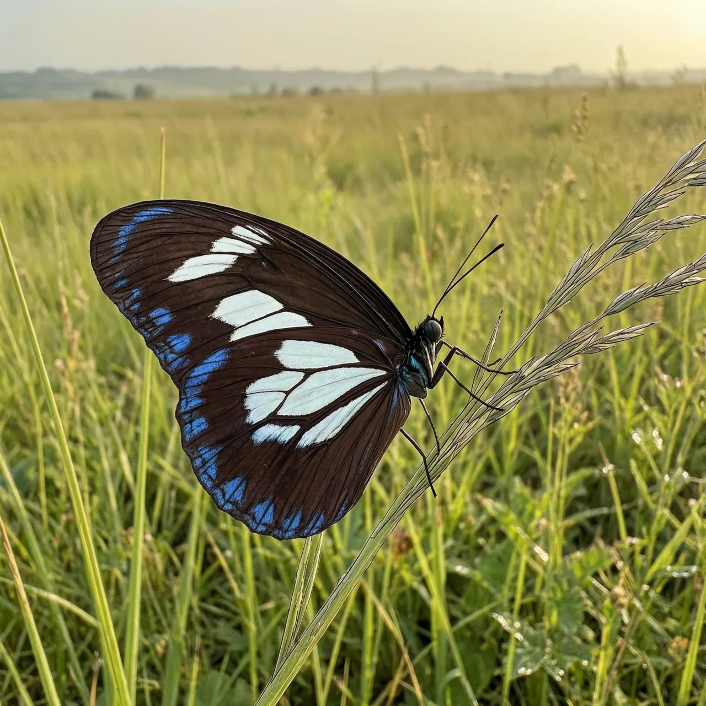
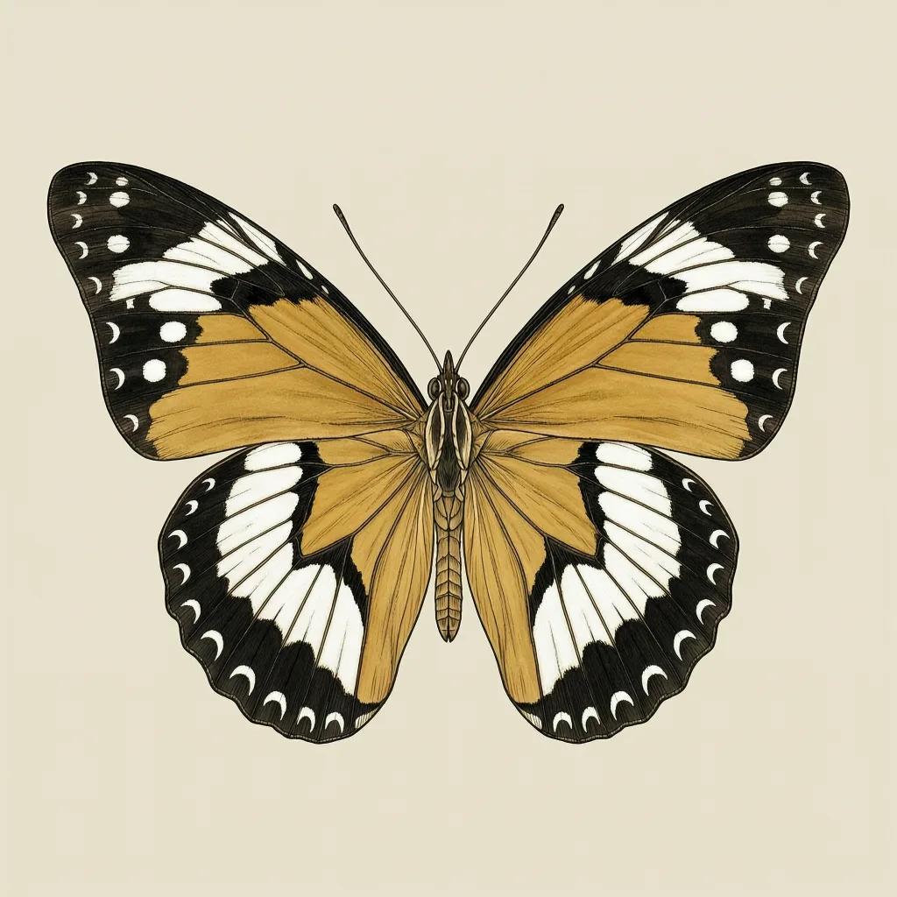

金斑蛱蝶是一种分布极广的蛱蝶，从非洲、亚洲、澳洲到西印度群岛与印度洋诸岛都有记录，靠风远距离扩散。雄蝶单一色型，黑褐底色配白斑；雌蝶却有多种形态，有的模仿不可口的金斑蝶与帝王斑蝶，有的形似雄蝶。只有雌蝶换装，雄蝶一辈子做自己。
在美洲，金斑蛱蝶见于西印度群岛，偶有迷蝶飘到中美洲与北美洲。它的主体范围是非洲、亚洲与澳洲，同时大量出现在印度洋的岛屿上，塞席尔的马埃岛、普拉兰岛、阿尔达布拉环礁及科西涅岛都有记录。这些岛与陆地之间隔着海水，而金斑蛱蝶的出现并不依赖持续飞越：它是迁飞性种类，风把它推过 horizon。一张星散的地图，记录的其实是风吹过的方向。
这个物种最著名的地方在雌蝶身上。雄蝶是单一色型：上翅呈暗天鹅绒般的黑褐色，前翅一枚大白椭圆形斑，翅尖附近另有一枚小白斑，翅缘要在特定角度才泛出蓝色虹彩。雌蝶完全不同，同一个物种里并存多种形态：有的与雄蝶相似，有的换上赭黄与黑相间、带白斑的样式，模仿不可口的金斑蝶与帝王斑蝶。拟态起作用的链条是：捕食者吃过那些毒蝶的亏，会回避这套配色，雌蝶借此躲开天敌。雄蝶不需要伪装，它们有另一种节奏——多在午后降雨后特别活跃。
更反常的是，这场伪装骗过分类学：Butler 在 1883 年发表的 Hypolimnas alcippoides，后来被收进金斑蛱蝶的异名清单，它指认的对象不过是一种雌性第二型——后翅上下两面各有一块白色区域。而雄蝶永远是那个单一色型，黑褐底、白斑，不模仿任何蝶。同一个物种里，只有雌蝶变装，且不同雌蝶也不穿同一套衣裳：有的抄金斑蝶，有的抄帝王斑蝶，有的直接穿成雄蝶的样子。
